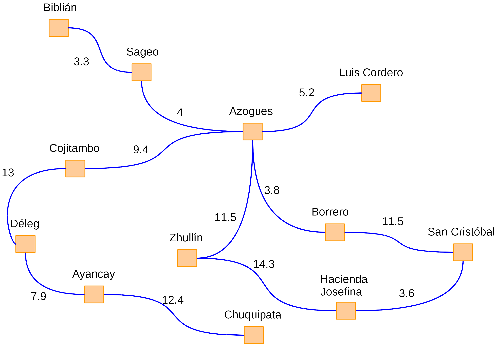
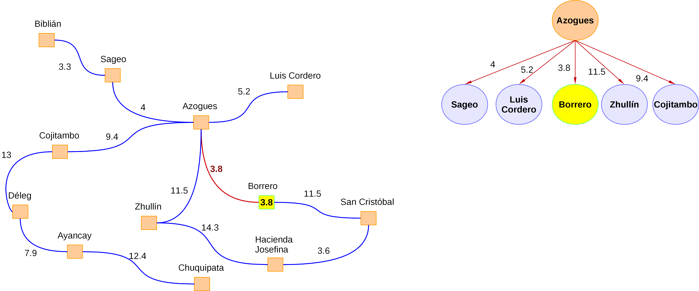
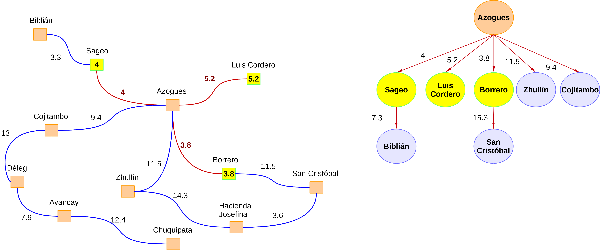
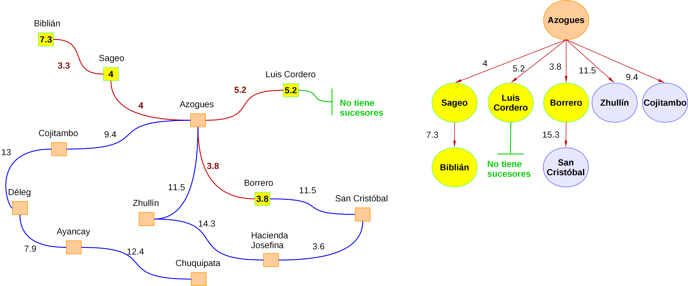
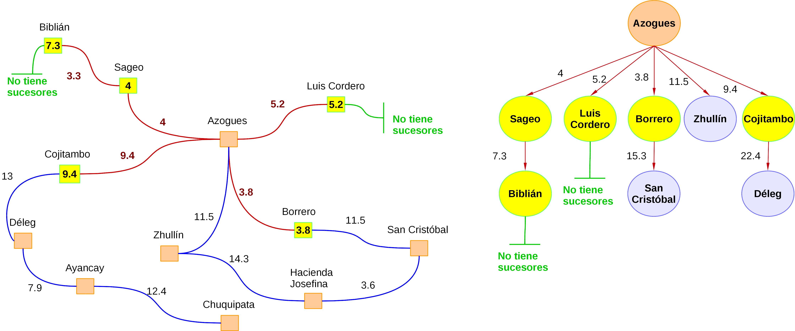
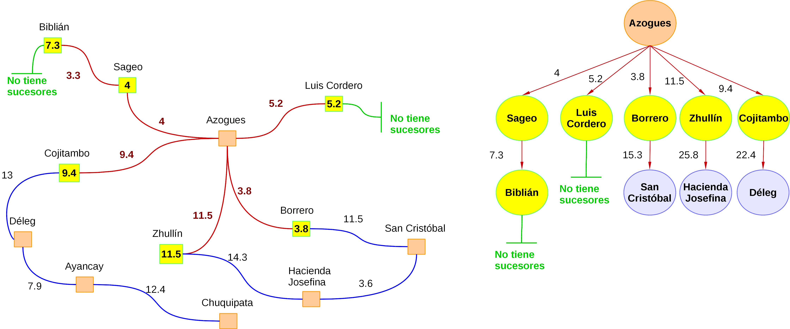
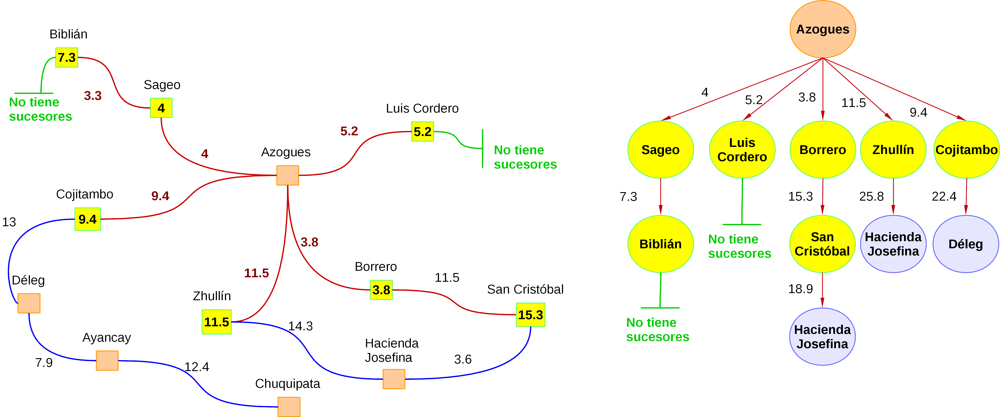

La búsqueda por costo uniforme, a diferencia de la búsqueda por amplitud, tiene dos objetivos puntuales (Platt, 2016):
- Considerar las distancias que existen a los nodos o puntos de interés a fin de ir seleccionando el mejor camino.
- Tratar de encontrar la ruta con el menor coste (en términos de distancias).
Para ello este tipo de búsqueda selecciona los nodos de forma similar a lo que hace la búsqueda por amplitud, pero considera el coste del camino, es decir, trata de abrir los nodos que generen el menor coste. Para ello debemos considerar los siguientes conceptos (Platt, 2016):
- Coste de ir un estado A a un estado B: c(A, B)
- Mínimo coste de ir del estado de partida al estado B: g(B)
Por ello, en lugar de usar únicamente la lógica FIFO (cola) que emplea la búsqueda por amplitud, consideraremos también el coste del camino como base para establecer la prioridad de cada nodo (Platt, 2016).
A fin de ilustrar de una manera sencilla cómo funciona este método, vamos a retomar el ejemplo del problema del "viajero", donde dado el siguiente grafo, debemos ir del nodo "Azogues" al nodo "Hacienda Josefina". A continuación se irá explicando paso a paso cómo se lleva a cabo el proceso de búsqueda (considerando los costes en términos de distancia de nodos):

- Como primer paso agregamos el nodo de partida a la cola. Con lo que nuestra lista quedaría definida de la siguiente forma: ListaNodos = {Azogues (0)}. Vemos que se coloca la distancia desde el nodo de partida al nodo actual. En este caso es 0, ya que "Azogues" es el nodo de partida.
- A continuación analizamos cuáles son las posibles acciones para el nodo "Azogues". Si partimos de este nodo, el camino actual a los puntos adyacentes: Sageo, Cojitambo, Luis Cordero, Zhullín y Borrero tienen un coste diferente, siendo el menor "Borrero". Con ello, podemos movernos a 5 posibles nodos y los agregamos a la cola ordenándolos de acuerdo al coste del camino (previo a haber sacado al nodo "Azogues" que ya fue visitado y colocado en la lista de visitados):
- ListaNodos = {Borrero (3.8), Sageo (4), Luis Cordero (5.2), Cojitambo (9.4), Zhullín (11.5) }
- Visitados = {Azogues (0)}
- 
- Como se aprecia en la ilustración anterior, escogemos el camino que tiene el coste más corto, en este caso "Borrero", luego de expandir todas las posibilidades de acción dado el nodo origen. Este nodo se saca de la cola y se coloca en la lista de visitados. Ahora expandimos el nodo "Borreo" y vemos los costes que tendría ir por sus sucesores (en este caso solo 1): "San Cristóbal" = 15.3. Como en este caso el coste es muy alto, el algoritmo escoge el menor camino actual, que sería "Sageo" (coste = 4):
- ListaNodos = {Luis Cordero (5.2), Cojitambo (9.4), Zhullín (11.5), San Cristóbal (15.3) }
- Visitados = {Azogues (0), Borrero (3.8), Sageo (4) }
- En el siguiente paso expandimos los nodos sucesores de "Sageo", que en este caso es un único nodo "Biblián". Como vemos, el coste para llegar a dicho nodo es 7.3, y aún existe un camino que tiene menor coste ("Luis Cordero"). Por ello, ahora se visita el nodo "Luis Cordero" (se saca de a lista de nodos y se lo marca como visitado luego de verificar que no sea un nodo meta):
- ListaNodos = {Biblián (7.3), Cojitambo (9.4), Zhullín (11.5), San Cristóbal (15.3) }
- Visitados = {Azogues (0), Borrero (3.8), Sageo (4), Luis Cordero (5.2) }
- 
- En este paso expandimos los nodos sucesores de "Luis Cordero", sin embargo, como no tiene nodos y no hemos llegado al nodo meta, debemos expandir aquel camino que sea el siguiente de menor coste. Con ello, el actual camino de menor coste es hacia el nodo "Biblián". Procedemos a visitarlo y expandir sus nodos (previo a verificar si es un nodo meta). Como es el procedimiento, lo sacamos de la cola y lo ubicamos en la lista nodos visitados:
- ListaNodos = {Cojitambo (9.4), Zhullín (11.5), San Cristóbal (15.3) }
- Visitados = {Azogues (0), Borrero (3.8), Sageo (4), Luis Cordero (5.2), Biblián (7.3) }
- 
- Ahora debemos expandir los nodos sucesores del nodo "Biblián", sin embargo este nodo no los tiene. Por ello, seleccionamos el camino que tenga el menor coste actual, que es "Cojitambo". Visitamos ese nodo, verificamos si es un nodo meta, y procedemos a expandir sus hijos (colocándolo en la lista de visitados):
- ListaNodos = {Zhullín (11.5), San Cristóbal (15.3), Déleg (22.4) }
- Visitados = {Azogues (0), Borrero (3.8), Sageo (4), Luis Cordero (5.2), Biblián (7.3), Cojitambo (9.4)}
- 
- Llegar al nodo "Déleg" nos costaría 22.4. Por ello, ahora escogemos el camino que tenga el menor coste, en este caso es el nodo "Zhullín". Lo visitamos, agregamos a la lista de visitados (luego de sacarlo de la cola) y expandimos sus sucesores:
- ListaNodos = { San Cristóbal (15.3), Déleg (22.4) , Hacienda Josefina (25.8) }
- Visitados = {Azogues (0), Borrero (3.8), Sageo (4), Luis Cordero (5.2), Biblián (7.3), Cojitambo (9.4), Zhullín (11.5) }
- 
- En este punto, tenemos 3 caminos para seguir, donde el de menor coste es tomar el nodo "San Cristóbal", cuyo coste es 15.3. Para ello, visitamos el nodo, verificamos si es un nodo meta, lo sacamos de la cola y lo ubicamos en la lista de visitados:
- ListaNodos = {Hacienda Josefina (18.9), Déleg (22.4) , Hacienda Josefina (25.8) }
- Visitados = {Azogues (0), Borrero (3.8), Sageo (4), Luis Cordero (5.2), Biblián (7.3), Cojitambo (9.4), Zhullín (11.5), San Cristóbal (15.3) }
- 
- Ahora procedemos a analizar cuál es el camino con menor coste, y en este caso, es el que lleva al nodo "Hacienda Josefina" (yendo de "San Cristóbal"). Visitamos el nodo "Hacienda Josefina", expandimos sus sucesores, verificamos si es un nodo meta (y como si lo es, lo anotamos). Es importante anotar que no podemos volver a agregar al nodo "San Cristóbal" por que ya se visitó.
- ListaNodos = {Déleg (22.4) , Hacienda Josefina (25.8) }
- Visitados = {Azogues (0), Borrero (3.8), Sageo (4), Luis Cordero (5.2), Biblián (7.3), Cojitambo (9.4), Zhullín (11.5), San Cristóbal (15.3), Hacienda Josefina (18.9) }
- En este paso, verificamos que "Hacienda Josefina" es un nodo meta, y dado que tiene el camino más corto, detenemos el proceso. Ahora procedemos a devolver la ruta exacta:
- Ruta = {Azogues, Borrero, San Cristóbal, Hacienda Josefina}